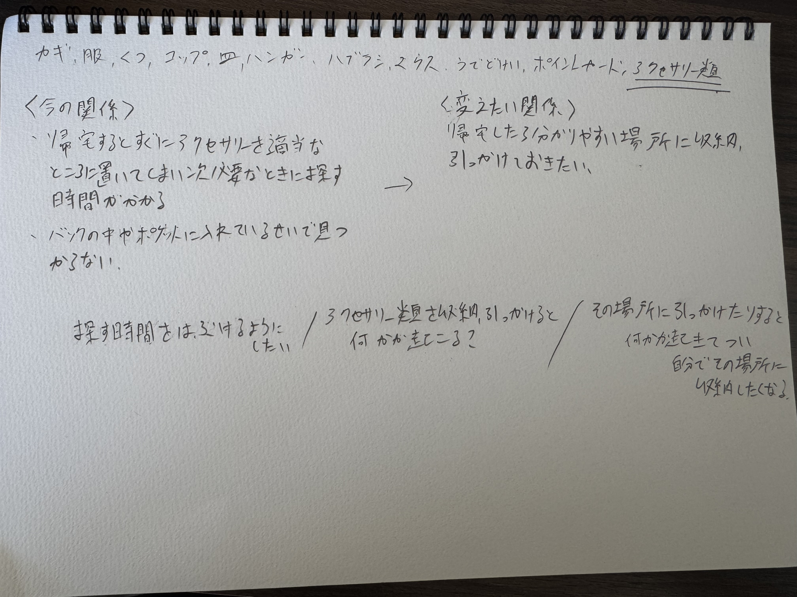
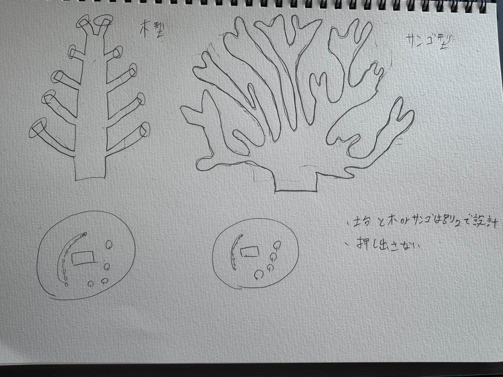
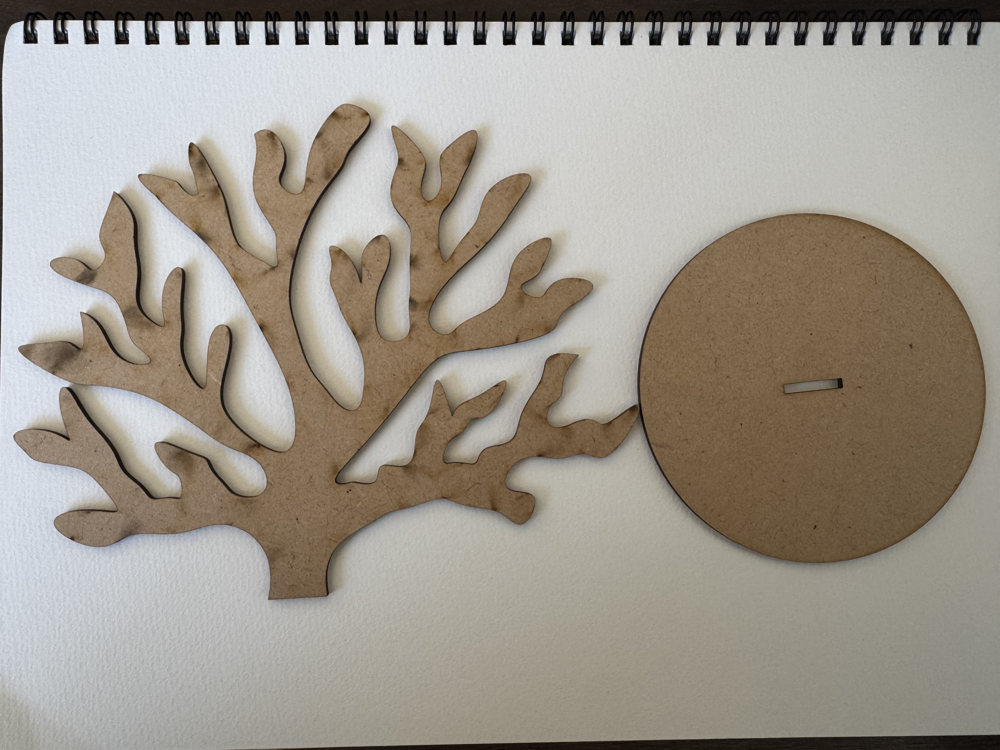
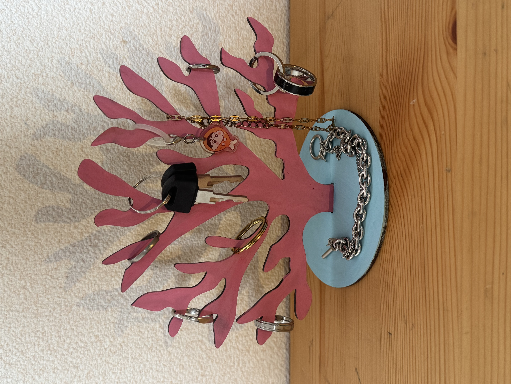

作品について
今回は帰宅したときにアクセサリー類を適当な場所においてしまい、必要な時に見つからず、探す時間がかかることが課題だった。
そこでアクセサリー類を決まった場所にかけて収納できるものを作ろうと考えた。サンゴ礁は枝分かれした形をしているため、様々な場所にアクセサリー類をかけられると考えた。
また自然な形を活かすことでただ収納だけではなく、インテリアとしても楽しめると思ったためこの作品を作ることにした。

デザイン

↓
スケッチから完成品へ

使ってみた
何もつけないとただのサンゴ礁っぽく見えるがアクセサリー類を付けることによって魚がいるように見えたりサンゴ礁がきれいに光っているように見える
制作過程
STEP 01
アイデアを考える
サンゴの形を参考にアクセサリーを掛けられるデザインを考えた
STEP 02
Fusion 360で設計
Fusion 360を使って土台や枝などのパーツを設計した
STEP 03
レーザーカッターで加工
設計したデータをDXF形式で書き出し、MDFを加工した
STEP 04
組み立て・仕上げ
切り出したパーツを組み合わせ、本物に似せるように色を塗って仕上げた
制作データ
参考動画
制作の参考にした動画
YouTubeを見る